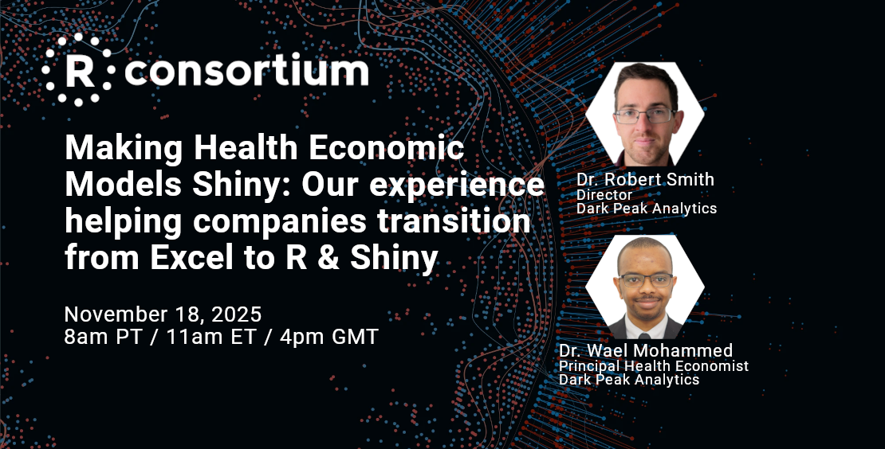

About
Mission
Governance
Bylaws (PDF)
ISC Charter
Marketing Committee Charter (PDF)
FAQ
Contact
Privacy Policy
Members
Members
Join
Membership Agreement (PDF)
Grants
Goal of ISC Grants Program
Recipients of ISC Grants
Call for Proposals
RUGS Program
Submitting for payment
Projects
R-Ladies
DBI
R-Universe
Working Groups
Events
R!sk (Feb 18-19, 2026)
R/Medicine (May 4-8, 2026)
Webinars
Events
Working Groups Calendar
News
Blog
Newsletter
Annual Report 2023 (PDF)
Annual Report 2021 (PDF)
Code of Conduct
R/Adoption Series:The Adoption Of R in Japan’s Pharma Industry Confirmation
The Adoption of R in Japan’s Pharma Industry talk and panel discussion was led by key industry experts from the JPMA R Task Force Team. The webinar explored the usage and…
R/Medicine Webinar Visualizing Survival Data with the {ggsurvfit} R Package
This webinar focused on the {ggsurvfit} R package, a tool designed to simplify the creation of time-to-event or survival analysis summary figures using {ggplot2}. It…
Containerization and R for Reproducibility and More
Containerization has become a dominant computing paradigm for computing in the past decade due to its many advantages: isolation and security, scalability and efficiency…
Escape the Data Dungeon: Unlock Scalable R Analytics and ML
Tired of sluggish R data processing and limited Machine Learning (ML) options…
From Paper to Pixels: Digitizing Water Quality Data Collection with Posit and Esri Integration
The Virginia Department of Environmental Quality (DEQ) is responsible for administering laws and regulations associated with air quality, water quality and supply, renewable…
From Vision to Action: The R Pfizer R Center of Excellence-led Journey to R Adoption
The webinar by the R consortium titled “From Vision to Action: The R Pfizer R Center of Excellence-led Journey to R Adoption” was not just a case study of Pfizer’s journey.…
How to use pointblank to understand, validate, and document your data
Slides available here
J&J: A Hybrid SAS/R Submission Story
R Consortium Silver Member Johnson & Johnson shared insights into their work on the successful…
Making Health Economic Models Shiny: Our experience helping companies transition from Excel to R & Shiny
Dark Peak Analytics shared insights into their experience helping companies transition from Excel to R & Shiny for…
Modular, interoperable, and extensible topological data analysis in R
This webinar covered work from an R Consortium ISC grant project called “Modular, interoperable, and extensible topological data analysis in R” starting in early 2024.
Tidy Finance and Accessing Financial Data
Tidy Finance and Accessing Financial Data (PDF)
Open Source Software Adoption in Japan’s Pharma Industry: Key Findings from the 2024 JPMA R Usage Survey
This webinar was hosted…
Augmenting your Quarto website with Retrieval-Augmented Generation (RAG) using Select AI in Autonomous Database
Retrieval augmented generation (RAG) combines vector search with generative AI – enabling more relevant and up-to-date responses from your large language model (LLM). In…
Quantification of Participation Risk using R and R Shiny
Webinar held on December 12th, 2024, on
Quantification of Participation Risk Using R and R Shiny
. Presented by Raiffeisenlandesbank Oberösterreich (RLB OÖ), this session delved into the bank’s advanced risk management practices, highlighting how…
R for Health Technology Assessment (HTA): Identifying Needs, Streamlining Processes, and Building Bridges
The Health…
R/Insurance Series: For Everyone in Insurance or Actuarial Science
These four webinars focused on insurance and actuarial science. The webinars were led…
R/Medicine: Quarto for Reproducible Medical Manuscripts
Slides available here:
Rix: reproducible data science environments with Nix
Reproducibility is critical for modern research…
SAS to R in Pharma – Creating Custom Solutions for Closed-Source Code
When supporting a heavily regulated pharmaceutical client in migrating their codebase from SAS to R, ProCogia encountered a complex pipeline built around a proprietary SAS…
Scaling the r-spatial ecosystem for the modern composable data pipeline
R has long been a top choice for spatial statistics, building on the pioneering sp and spdep packages and the wide ecosystem surrounding them. With the introduction of the…
Super‑charging R with Oracle Database: Getting Started with the ROracle Driver
Unlock the power of Oracle Database in R with the ROracle driver. This session introduces ROracle: the installation and configuration steps, key…
Tidy Finance Webinar Series
Christoph Scheuch is an independent data science and business intelligence expert. He co-created and maintains the Tidy Finance project, a transparent, open source approach to research in financial economics. Alongside contributing to Tidy Finance, its maintainers have published in leading academic…
Unlocking Collaborative Power with Git, GitHub CI/CD, and LLMs in Pharma
Are you new to Git and Github and wondering how to leverage it efficiently in your clinical trial work? Do you hear the terms…
Unlocking Insights from LatinR: Collaboration and Innovation in Data Science Webinar
Join us for an exciting webinar featuring the co-founders and co-chair of
LatinR
…
R/Medicine Webinar Visualizing Survival Data with the {ggsurvfit} R Package
This webinar focused on the {ggsurvfit} R package, a tool designed to simplify the creation of time-to-event or survival analysis summary figures using {ggplot2}. It…

Webinars
This is a series…
No matching items